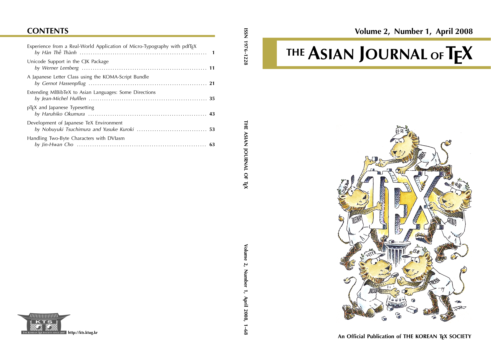

Published on April 30, 2008
Proceedings of "The Asian TeX Conference 2008"

Experience from a Real-World Application of Micro-Typography with pdfTeX
by Han, The Thanh 1-10This article describes the experience from a real-world application of micro-typography with pdfTeX. The project involved typesetting a study edition of the Bible in Czech, where there was a lot of further information apart from the original text: footnotes, references, further annotation etc. The design was not complex, but the typographic requirements were very strict. This posed a real challenge to typesetting everything without conflicts. The biggest problem was how to achieve perfect page-breaking without changing a single word of the text. The solution was to use a semi-automated method: manual breaking of each page, with auto-detection of problematic pages (like orphan/widow, too little/too much space between body and footnotes, etc.). When such a problem occurred, it had to be fixed by changing the length of one or more paragraphs on that page until the problem disappeared. Since we are not allowed to modify the text, the length of a paragraph could be changed only by changing the formatting of the paragraph (\looseness), in order to make it longer or shorter. This usually results in poor-looking paragraphs. However, with the aid of micro-typography provided by pdfTeX, this was achieved without loss of quality.
Unicode Support in the CJK Package
by Werner Lemberg 11-20This article describes how the CJK package for LaTeX handles Unicode encoded characters. Using the CJKutf8.sty file, LaTeX's native Unicode handling is combined with CJK's capabilities for CJKV scripts. Another recent extension is support for XeTeX which is here described also.
A Japanese Letter Class using the KOMA-Script Bundle
by Gernot Hassenpflug 21-33With the help of the CJK package Japanese can be typeset using a TeX distribution not specifically made for the purpose of typesetting Japanese. The KOMA-Script bundle is an alternative to the standard LaTeX classes and uses a European typesetting approach; the KOMA-Script classes inter-operate well with the CJK macros and the scrlttr2 letter class contains support for Japanese letter construction and envelope sizes. This article shows how these tools can be put together to write letters in Japanese, and also demonstrates an extension to the commonly available Wadalab fonts.
Extending MlBibTeX to Asian Languages: Some Directions
by Jean-Michel Hufflen 35-42MlBibTeX is a reimplementation of BibTeX with particular focus on multilingual features. The current version deals with most of European languages and here we point out the problems we have to face in order to extend this program to Asian languages. We show that MlBibTeX's expressive power allows us to envisage this extension and discuss the open ways, with some examples using the Korean language.
pTeX and Japanese Typesetting
by Haruhiko Okumura 43-51We describe the rules of Japanese typesetting and how the combination of ASCII's pTeX, Kobayashi's jis font metric, and the present author's js document classes implements them.
Development of Japanese TeX Environment
by Nobuyuki Tsuchimura and Yusuke Kuroki 53-62This paper describes a Japanese TeX distribution 'ptetex' which facilitates the installation process. We have two projects: one is to develop a UNIX source distribution, and another is to provide a binary package for Cygwin. We will also describe a new library, which helps Japanese TeX (pTeX), to handle character encoding operations even with UTF-8 encoding. As a result, it will be a breakthrough in typesetting UTF-8 encoded texts including CJK characters by pTeX.
Handling Two-Byte Characters with DVIasm
by Jin-Hwan Cho 63-68This paper is devoted to the second step of developing a new DVI editing utility, called DVIasm. DVIasm disassembles a DVI file into a human-readable text file the contents of which are easy to modify, and assembles the output back to the binary DVI format. The main theme of this paper is two-byte characters such as Chinese, Japanese, Korean, and Unicode characters. We discuss how DVIasm handles two-byte characters that are supposed to be typeset by 16-bit TeX extensions such as Omega and Japanese pTeX, or LaTeX packages with subfont scheme such as CJK-LaTeX and Korean ko.TeX.